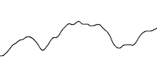
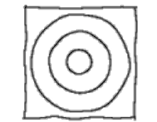
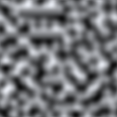
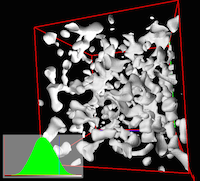
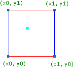
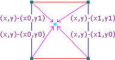
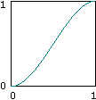
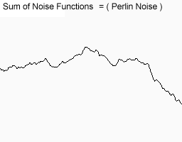

理解柏林噪声
- 翻译自: Understanding Perlin Noise
- 原文作者： Adrian Biagioli
- 本文链接： http://adrianb.io/2014/08/09/perlinnoise.html
- 版权声明： 原文采用 CC BY 4.0 许可协议，本文采用 CC BY-NC-SA 4.0 许可协议
本文的目的是对 Ken Perlin 所著 Improved Perlin Noise 通俗易懂的解释，这篇文章的代码使用 C# 实现并可自由使用。如果你只是想看最终的结果，你可以在这里查看最终代码。
柏林噪声是一种在程序化内容生成领域强有力的算法。其通常应用在游戏与诸如电影的视觉媒体方向。作为该算法的发明者， Ken Perlin ，因其早期的实验获得了奥斯卡金像奖。在这篇文章中，我将探索他2022年发布的改进柏林噪声（ Improved Perlin Noise ）。在游戏开发领域，柏林噪声可用于任何类型的波状型材料或材质。它可以用于生成地形（例如类似我的世界游戏的地形），火焰的效果，水和云。这些效果通常可以用二维或者三维的柏林噪声实现，当然，也可以轻松地扩展到四维实现。另外仅一维的柏林噪声可以用于生成横向滚动的地形（如游戏：泰拉瑞亚（ Terraria ）、星界边境（Starbound））或创造手绘线条的效果。
此外，如果你将柏林噪声扩展一个维度，并将这个维度作为时间，你将可以实现效果的动画化。例如，二维柏林噪声可以用于描绘地形，但是三维的柏林噪声可以描绘海洋中的水波变化。下面是不同维度柏林噪声的图像及其实际应用
| 维度 | 噪声灰度图 | 应用 |
|---|---|---|
| 1 |  |  用于创造手绘线条效果 |
| 2 |  | 通过应用渐变可以创造出火焰的效果 |
| 3 |  | 使用柏林噪声创建拥有洞穴的地形（也许是最广泛的用途) |
由此可见，柏林噪声可以用于很多自然现象的模拟，接下来让我们看看柏林噪声算法的原理
原理
注意：很多内容来自Matt Zucker 写的这篇文章。但是，那篇文章是基于 1980 年代初编写的原始柏林噪声算法，在这篇文章中，我将使用 2022 年发表的改进柏林噪声算法，因此我的版本与 Zucker 的版本有一些关键性的不同
让我们看看最基本的柏林噪声函数
public double perlin(double x, double y, double z);这个函数使用 x, y, z 作为输入，返回一个介于 0.0 到 1.0 之间的 double 类型数字。那么，我们可以对输入做些什么操作呢？首先，我们将 x, y, z 放入一个立方体中。换句话说就是找到 `[x, y, z] % 1. 在坐标系中的位置。下图是其在二维坐标中的表示。（蓝点表述输入坐标，周围四个点是单位坐标）

对于4个单位坐标点（在三维中有8个）中的每个节点，我们生成一个伪随机梯度向量，这个梯度向量定义了一个正方向与一个负方向（与正方向反向）。伪随机的意思是对于任何一组输入到梯度向量方程中的整数集合（索引）总是会得到相同的向量。因此，他只是看上去是随机的。此外，这意味着每个单位坐标都有”自己的“梯度，如果梯度函数（梯度向量方程）不变，梯度永远不会改变。

然而上图并不是准确，在 Ken Perlin 的改进噪声中，这些单位坐标上的点并不是完全随机的，每个单位点上对应的伪随机梯度向量是通过点到单位点向量决定的
(1,1,0),(-1,1,0),(1,-1,0),(-1,-1,0),
(1,0,1),(-1,0,1),(1,0,-1),(-1,0,-1),
(0,1,1),(0,-1,1),(0,1,-1),(0,-1,-1)选择这些梯度向量背后的原因见：Ken Perlin's 在 2022 发表的 SIGGRAPH 论文 Improving Noise
注意：很多关于柏林噪声的文章使用了不使用这些向量的原始柏林噪声算法，例如上图就描述的原始柏林噪声算法，因为图片是在 Improving Noise 发表前制作的，但是核心思想是相同的
接下来，我们需要计算四个距离向量（三维下是八个），即点周围四（八）个单位点到选取点的向量，这些距离向量二维表示如图

之后，我们需要点积梯度向量与距离向量从而计算出单位点的权值
grad.x * dist.x + grad.y * dist.y + grad.z * dist.z这样做的原因是两个向量的点积相当于是两个向量夹角余弦乘以这些向量的大小：
dot(vec1,vec2) = cos(angle(vec1,vec2)) * vec1.length * vec2.length换句话说，两个同向向量点积相当于
1 * vec1.length * vec2.length同时，如果两个向量方向相反，他们的点积为
-1 * vec1.length * vec2.length如果两个向量是垂直的，他们的点积为0
因此，当距离向量与梯度向量同向（夹角小于\(90^\circ\)），点积为正,反向，点积为负。这就梯度向量如何分正方向与负方向的，如图表示了正方向与负方向的影响

所以现在我们需要在这 4 个值之间进行插值，使得我们可以在四个单位点（三维八个）中获得权值。解决方案很简单：平均均值（双线性插值），以二维为例
// 四个单位点的权值定义如下:
// [g1] | [g2]
// -----------
// [g3] | [g4]
int g1, g2, g3, g4;
int u, v; // u，v 是输入点在单位点中的坐标位置
// 例如 (u,v) = (0.5,0.5) 表示输入点在单位点围成方形中心
int x1 = lerp(g1,g2,u);
int x2 = lerp(g3,h4,u);
int average = lerp(x1,x2,v);最后一个问题是：使用上面的平均均值（双线性插值）的方法效果并不好，这种方法虽然计算很简单，但是看起来并不自然。我们需要一些平滑过渡。因此，我们使用了淡入淡出函数，有名缓动曲线，如图是一种缓动曲线

这个缓动曲线将应用于u，v的计算，这样的处理会使接近边缘的输入点更加接近边缘。改进柏林噪声使用了这样的缓动曲线方程 \[ 6t^5-15t^4+10t^3 \] 这就是柏林噪声的原理，我们现在已经理解了柏林噪声的每一部分，让我们看一些代码实现
代码实现
代码是使用 C# 实现的，这份代码是 Ken Perlin's Java Implementation 的轻微修改版本。这份代码比原版更加清晰并添加了一些重复噪声的能力。这些代码是可以自由使用的（毕竟我没有真正的实现 - 但是 Ken Perlin 做到了）
配置
第一步需要设置一个排列表，简称 p[] 数组。他通常是一个长度为 256 值介于 0 到 255 的数组。我们也可以重复这个数组（通常总大小为 512 ）以避免数组越界：
private static readonly int[] permutation = { 151,160,137,91,90,15, // Ken Perlin 实现的查找表，这是随机选取的
131,13,201,95,96,53,194,233,7,225,140,36,103,30,69,142,8,99,37,240,21,10,23, // 元素值介于 0 - 255
190, 6,148,247,120,234,75,0,26,197,62,94,252,219,203,117,35,11,32,57,177,33,
88,237,149,56,87,174,20,125,136,171,168, 68,175,74,165,71,134,139,48,27,166,
77,146,158,231,83,111,229,122,60,211,133,230,220,105,92,41,55,46,245,40,244,
102,143,54, 65,25,63,161, 1,216,80,73,209,76,132,187,208, 89,18,169,200,196,
135,130,116,188,159,86,164,100,109,198,173,186, 3,64,52,217,226,250,124,123,
5,202,38,147,118,126,255,82,85,212,207,206,59,227,47,16,58,17,182,189,28,42,
223,183,170,213,119,248,152, 2,44,154,163, 70,221,153,101,155,167, 43,172,9,
129,22,39,253, 19,98,108,110,79,113,224,232,178,185, 112,104,218,246,97,228,
251,34,242,193,238,210,144,12,191,179,162,241, 81,51,145,235,249,14,239,107,
49,192,214, 31,181,199,106,157,184, 84,204,176,115,121,50,45,127, 4,150,254,
138,236,205,93,222,114,67,29,24,72,243,141,128,195,78,66,215,61,156,180
};
private static readonly int[] p; // 重复一个排列表避免下标越界
static Perlin() {
p = new int[512];
for(int x=0;x<512;x++) {
p[x] = permutation[x%256];
}
}p[] 排列表将用于 hash 函数，该函数将决定之后使用哪个梯度向量，我们将在后面详细描述函数实现细节
接下来是噪声函数
public double perlin(double x, double y, double z) {
if(repeat > 0) { // 如果开启了重复，就求余获得防止越界
x = x%repeat;
y = y%repeat;
z = z%repeat;
}
int xi = (int)x & 255; // 计算单位点位置
int yi = (int)y & 255; // 左下角是( |_x_|,|_y_|,|_z_| )
int zi = (int)z & 255;
double xf = x-(int)x; // 计算点在单位点在中的局部位置
double yf = y-(int)y;
double zf = z-(int)z;
// ...
}这份代码很容易理解，首先如果代码使用了重复排列表方法，使用求余运算计算下标以避免越界。接下来创建变量 xi, yi, zi，其代表了输入点对应单位点及其所在立方体。我们也可以将坐标归一化到 \([0,255]\) 这可以避免在访问 p[] 时下标越界。但是这也会造成副作用：柏林噪声结果会每 256 重复一次。但这并不是一个问题，因为我们可以用是十进制坐标实现柏林噪声。最后最后我们要找到点在单位立方体中的位置，也就是 \(n = n \% 1.0\) ，其中 \(n\) 是一个坐标。
缓动曲线
现在我们需要定义上图中的缓动曲线，正如上面提到的，缓动曲线方程是 \[ 6t^5-15t^4+10t^3 \] 代码实现为
public static double fade(double t) { // Ken Perlin 定义的函数. 这缓动了坐标值，
// 让坐标值趋向边界
return t * t * t * (t * (t * 6 - 15) + 10); // 6t^5 - 15t^4 + 10t^3
}
public double perlin(double x, double y, double z) {
// ...
double u = fade(xf);
double v = fade(yf);
double w = fade(zf);
// ...
}其中 u / v / w 将在之后插值时使用
Hash 函数
柏林噪声的 hash 函数输入一组坐标并返回一个独一无二的值， hash 函数的维基百科定义如下
一种函数可以将任意范围的数据映射到固定范围，输入数据微小的差异会导致结果巨大的差异
如下是柏林噪声中的 hash 函数，它使用了我们之前创建的排列表 p[]
public double perlin(double x, double y, double z) {
// ...
int aaa, aba, aab, abb, baa, bba, bab, bbb;
aaa = p[p[p[ xi ]+ yi ]+ zi ];
aba = p[p[p[ xi ]+inc(yi)]+ zi ];
aab = p[p[p[ xi ]+ yi ]+inc(zi)];
abb = p[p[p[ xi ]+inc(yi)]+inc(zi)];
baa = p[p[p[inc(xi)]+ yi ]+ zi ];
bba = p[p[p[inc(xi)]+inc(yi)]+ zi ];
bab = p[p[p[inc(xi)]+ yi ]+inc(zi)];
bbb = p[p[p[inc(xi)]+inc(yi)]+inc(zi)];
// ...
}
public int inc(int num) {
num++;
if (repeat > 0) num %= repeat;
return num;
}使用上面的 hash 函数哈希输入点周围的八个单位点，inc() 函数用于获取坐标值的后继并保证不会越界。如果你没有设置 repeat ，那么 inc(xi) = xi + 1。由于我们使用了 p[] 数组，结果将介于 0 - 255
梯度函数
我一直认为 Ken Perlin 原始的梯度函数 grad() 是杂乱且不必要的。记住， grad() 的目标是计算随机选取的伪梯度向量与八个距离向量的点积。Ken Perlin 使用了一些花哨的位运算方法实现了这个函数
public static double grad(int hash, double x, double y, double z) {
int h = hash & 15; // 取 hash 的后四位
double u = h < 8 /* 0b1000 */ ? x : y; // 如果最高为为0就设置 u = x，否则y
double v; // 原版中是用的?:运算
if(h < 4 /* 0b0100 */) // 判断第二位为0
v = y;
else if(h == 12 /* 0b1100 */ || h == 14 /* 0b1110*/) // 判断最高位与第二位为1
v = x;
else // 判断一二位不同
v = z;
return ((h&1) == 0 ? u : -u)+((h&2) == 0 ? v : -v); // 判断后两位
}下面的代码是上面代码的另一种实现，这种方法更加易懂（在部分语言中更快）
// 来源: http://riven8192.blogspot.com/2010/08/calculate-perlinnoise-twice-as-fast.html
public static double grad(int hash, double x, double y, double z)
{
switch(hash & 0xF)
{
case 0x0: return x + y;
case 0x1: return -x + y;
case 0x2: return x - y;
case 0x3: return -x - y;
case 0x4: return x + z;
case 0x5: return -x + z;
case 0x6: return x - z;
case 0x7: return -x - z;
case 0x8: return y + z;
case 0x9: return -y + z;
case 0xA: return y - z;
case 0xB: return -y - z;
case 0xC: return y + x;
case 0xD: return -y + z;
case 0xE: return y - x;
case 0xF: return -y - z;
default: return 0; // 永不到达
}
}上面的代码可以在这里找到，这两种代码结果完全相同，他们随机从下面几个向量中选取结果
(1,1,0),(-1,1,0),(1,-1,0),(-1,-1,0),
(1,0,1),(-1,0,1),(1,0,-1),(-1,0,-1),
(0,1,1),(0,-1,1),(0,1,-1),(0,-1,-1)选取结果由 hash 函数结果后四位决定（通过 grad() 的第一个参数输入）另外三个参数用来表述距离向量（他们将用于计算点积）
将函数连起来
public double perlin(double x, double y, double z) {
// ...
double x1, x2, y1, y2;
x1 = lerp( grad (aaa, xf , yf , zf), // grad 函数计算点积
grad (baa, xf-1, yf , zf), // 梯度向量与输入周围单位点
u);
x2 = lerp( grad (aba, xf , yf-1, zf), // 将这些点做线性插值
grad (bba, xf-1, yf-1, zf),
u);
y1 = lerp(x1, x2, v);
x1 = lerp( grad (aab, xf , yf , zf-1),
grad (bab, xf-1, yf , zf-1),
u);
x2 = lerp( grad (abb, xf , yf-1, zf-1),
grad (bbb, xf-1, yf-1, zf-1),
u);
y2 = lerp (x1, x2, v);
return (lerp (y1, y2, w)+1)/2; // 将插值结果从 [0, 1] 转为 [-1, 1]
}
// 线性插值
public static double lerp(double a, double b, double x) {
return a + x * (b - a);
}处理震幅
我们要讨论的最后一件事是如何处理柏林噪声让他看起来开更加自然。虽然柏林噪声一定程度上模拟了自然现象，但是他不能完全描述自然界中人们期望的所有行为。例如，一个地形可以像山一样大而宽广，也可以像小山，盆地一样小，还可以像巨石一样小，甚至像鹅卵石一样小。（获得不同尺度震幅）方法很简单：可以生成各种各样的不同震幅与频率的柏林噪声并将他们叠加在一起。当然，频率是采样的周期，震幅是变化的范围。

把上图叠加在一起就得到

显然这个结果很有说服力。上面六组噪声成为不同振幅的噪声。每个振幅的值对结果影响很小。当然每一个振幅生成都需要线性时间复杂度，因此在运行的时候不要用太多组振幅函数（例如在生成 60FPS 的火焰效果时）。然而，多组震幅在预处理数据（例如在生成地形时）很有效。
但是多震幅噪声会在多大程度上影响效率呢？这个问题可以用另一个叫做持久性的变量度量。Hugo Elias 是这样定义持久性的：
\(频率 = 2^i\) \(震幅 = 持久性^i\)
\(i\) 就是我们定义的震幅
public double OctavePerlin(double x, double y, double z, int octaves, double persistence) {
double total = 0;
double frequency = 1;
double amplitude = 1;
double maxValue = 0; // 通常范围在 0.0 - 1.0
for(int i=0;i<octaves;i++) {
total += perlin(x * frequency, y * frequency, z * frequency) * amplitude;
maxValue += amplitude;
amplitude *= persistence;
frequency *= 2;
}
return total/maxValue;
}结论
就是这样，我们已经知道如何生成噪声了。此外，你可以在这里找到所有源码。如果你有任何问题，请在下面评论区评论。
参考文献
这是一些参考资料，如果您有兴趣，可以查看：
- Ken Perlin 的“官方”改进柏林噪声 - 这是 Ken Perlin 写的原始算法.
- ”柏林噪声常见数学问题解答“ - 这是关于该算法非常棒的参考。然而，记住他使用的 1980 年代的原始的柏林噪声算法，并不是本文讨论的。
- Hugo Elias 的论文 - 最受欢迎的柏林噪声文章之一。这是一个关于震幅与实际应用最好的参考. 然而这不是真正的柏林噪声! Hugo 的算法并不是基于柏林噪声梯度的。相反，它使用的是值噪声，本质上是模糊的白噪声。 不要混淆两者！
- "如何在你的游戏中使用柏林噪声" - Devmag - 一篇非常棒的关于柏林噪声的潜在使用的文章。这是非常棒的读物，但是再次注意，这不是真正的柏林噪声！ Devmag 使用的是值噪声。
- GPU Gems - "改进柏林噪声实践" - 本文利用 GPU 的强大功能，使用柏林噪声实时渲染令人惊叹的海洋。着色器很酷！
感谢你的阅读！
更新
8/9/14 - 我更新了更多关于点积的表示, 并且我更新了一些错别字. 非常感谢诶 Reddit 给我提供的建议 /r/programming, /r/gamedev, 与 /r/Unity3D.